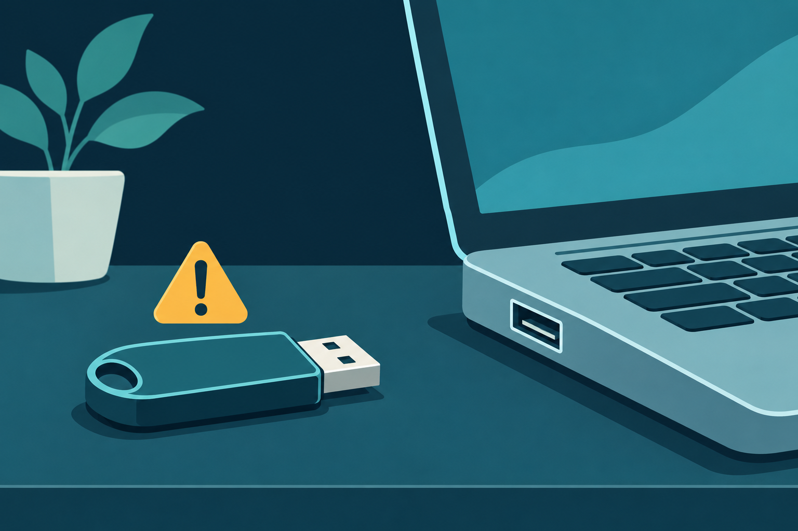

USB drives and unfamiliar accessories
A familiar connector does not tell you whether a device is trustworthy. Decide whether to connect it before you think about opening its files.

Think before connecting an unfamiliar device.
The risk is not only in the files
A modified USB device can pretend to be a keyboard and enter commands when connected. It may look like an ordinary storage drive. Avoiding its files is therefore not enough to make an unfamiliar device safe.
Found drives and unexpected promotional gifts are poor reasons to trust hardware. Do not connect one just to see what is on it.
Before plugging something in
- Check where it came from. If the origin is unclear, leave it disconnected.
- Follow your university or workplace rules for removable media.
- Keep your computer with you in public places so someone else cannot attach a device unnoticed.
This page covers the connection decision. For the wider protection of your laptop, see device security .